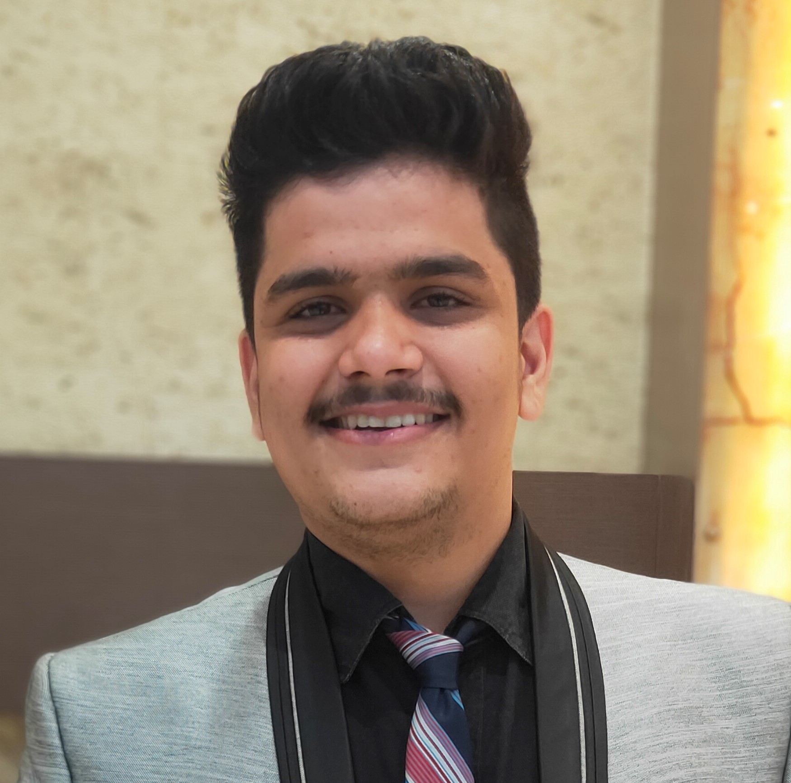

|

personal DetailsName: Interests
Languages
|
Aman GulwaniAn enthusiastic engineering fresher who is a self-starter and capable to use technical skills for the betterment of the organization. A Bachelor’s degree in Computer Science and Engineering has enhanced my proficiency in developing web applications and looking forward to work in a competitive environment that enhances overall learning. Passionate about implementing and launching new projects. Ability to translate business requirements into technical solutions. Work ExperienceInternshipSmart water management system using IOTDysmech consultancy services, Pune
Academics
|